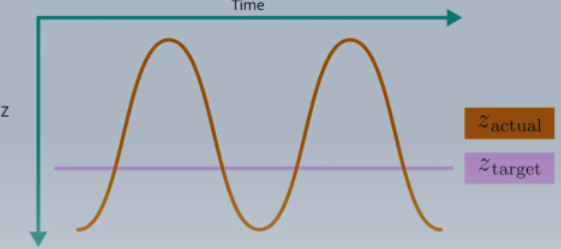
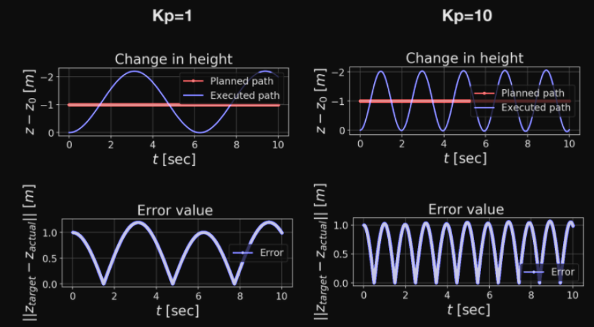

The control strength is proportional to error:
$$\begin{align*}
e(t) &= z_{target}(t) - z(t) \\
\ddot{z}(t) &= \bar{u}_t(t) = K_p e(t)
\end{align*}$$
Problems with P controller

The output of the P controller is better than the quadratic error of the open loop control strategy.
However, there are 2 problems:
Oscillating behaviour
The actual $z$ bounces up and down when it's supposed to be steady.
Offset
The oscillations aren't centered on the target $z$.
Different values of $K_p$ won't help get rid of the oscillations; they only change the frequency of the oscillations.

Comparing the results with two $K_p$ values ($K_p=1$ and $K_p=10$):
When $z_{target}$ is different from the current $z$, the controller accelerates in proportion with the error. But this, unfortunately, does not lead to zero velocity when the vehicle gets to the target location. Instead, the vehicle gets to the target altitude with some vertical speed and this causes it to overshoot and hence begins a cycle of oscillations.